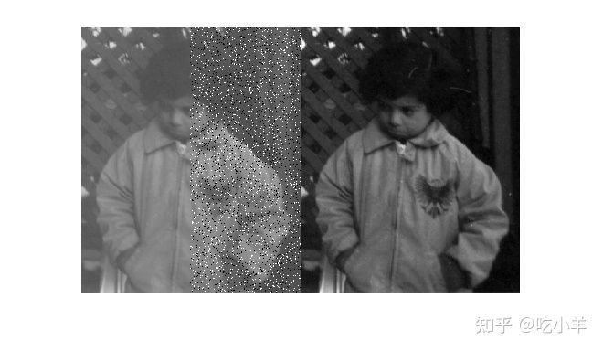
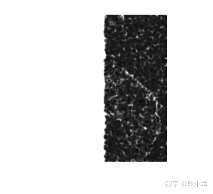

Home
获得局部结构相似指数Obtain Local Structural Similarity Index
本示例说明如何在与参考图像进行比较时测量图像区域的质量。ssim函数根据图像中每个像素与 11×11 邻域中其他像素的关系计算其结构相似性指数。该函数在与要测量质量的图像大小相同的图像中返回此信息。这种局部的、逐像素的质量指数可以被视为具有适当缩放比例的图像。
读取图像以用作参考图像。
ref = imread('pout.tif');
通过制作参考图像的副本并添加噪声来创建质量需要测量的图像。为了说明局部相似性，将噪声隔离到图像的一半。并排显示参考图像和噪声图像。
A = ref; A(:,ceil(end/2):end) = imnoise(ref(:,ceil(end/2):end),'salt & pepper', 0.1); figure, imshowpair(A,ref,'montage')

与参考图像 (ref) 相比，计算修改后的图像 (A) 的局部结构相似性指数。可视化局部结构相似性索引。请注意与参考图像相同的图像左侧如何显示为白色，因为所有局部结构相似性值为 1。
[global_sim local_sim] = ssim(A,ref); figure, imshow(local_sim,[])

======================================================================
我的测试结果及程序
下面是我测试的代码：

注：本文根据MATLAB官网内容修改而成。